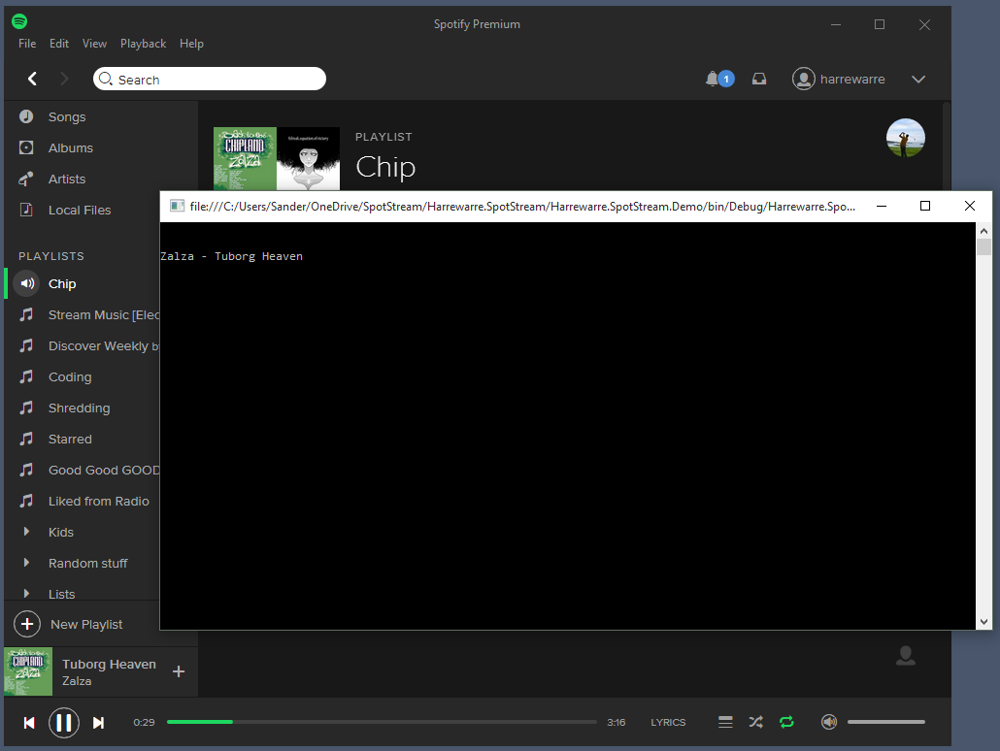
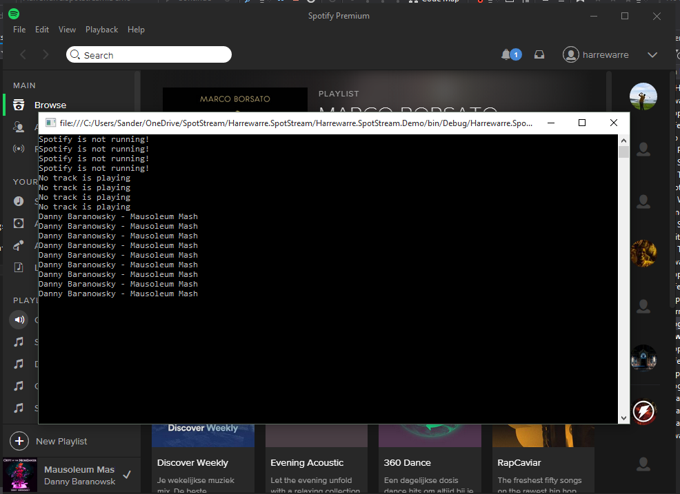
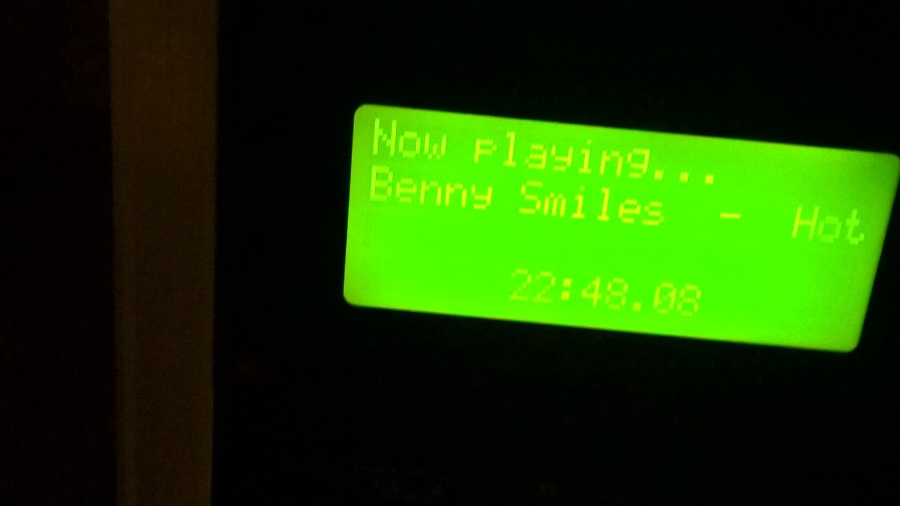

Spotify recently updated the desktop app again and it is once again possible to read current track info directly from it. Here is how you to read it using a little C# code.
A tiny little disclaimer, Spotify can break this code by updating their desktop app. It'll work now, but if they remove the track info from the title again, things won't work anymore.
So the current track is hidden somewhere, let's find out where it is.
class Program
{
static void Main(string[] args)
{
var procs = Process.GetProcessesByName("Spotify");
foreach (var p in procs)
{
Console.WriteLine(p.MainWindowTitle);
}
Console.ReadLine();
}
}
As you can see, the track title is in the window name of a Spotify process:

While a bit limited (no track times or anything) it's at least something to work with. Older versions of Spotify showed the title as well until it got removed at some point but it has returned once again. Now that we know where it is we need to make it usable somehow.
We want the track info to be up to date so we have to keep reading it over and over again. A timer will let us do exactly that.
A timer lets us poll for the track info every x milliseconds by whatever way we want but we still need to read the track info in simple way. A scraper will do the trick, we find the Spotify process that has a title on its window and read it if we find something.
using System;
using System.Diagnostics;
using System.Linq;
namespace Harrewarre.Spotify.Demo
{
public class Scraper
{
public string GetSpotifyTrackInfo()
{
var proc = Process.GetProcessesByName("Spotify").FirstOrDefault(p => !string.IsNullOrWhiteSpace(p.MainWindowTitle));
if(proc == null)
{
return "Spotify is not running!";
}
if(string.Equals(proc.MainWindowTitle, "Spotify", StringComparison.InvariantCultureIgnoreCase))
{
return "No track is playing";
}
return proc.MainWindowTitle;
}
}
}
We look for a process named Spotify that as some text set as its MainWindowTitle, if we find it, then Spotify is running. When it comes up null, Spotify is not running. If the title is set to "Spotify" there is no track playing. If we don't return before we reach the last return statement, we have found the currently playing track.
Here is the final console app code for a quick demo:
using System;
using System.Timers;
namespace Harrewarre.Spotify.Demo
{
class Program
{
static void Main(string[] args)
{
var timer = new Timer(1000);
var scraper = new Scraper();
timer.Elapsed += (sender, elapsedArgs) =>
{
var title = scraper.GetSpotifyTrackInfo();
Console.WriteLine(title);
};
timer.Start();
Console.ReadLine();
}
}
}
We create a new timer that is set to raise an event every 1000 milliseconds (or 1 second). An instance of our Scraper is created to read the track info for us. The TimerElapsed event we created for our timer is wired up so that the code can do something every second. When the timer elapses, we read the track info using the scraper and write it to the console.
Finally we start the timer and leave the console open by waiting for the enter key using the Console.ReadLine method. Here is what you might see if you run the code, start Spotify and let it play a track:

This code lets you access the current track title and do whatever you want with it. Write it to a file, post it to some server somewhere or, like I do, display it on the front of your PC:
 Sorry about the blurry pic, the LCD's refresh rate and odd viewing angles makes it hard to capture
Have fun!